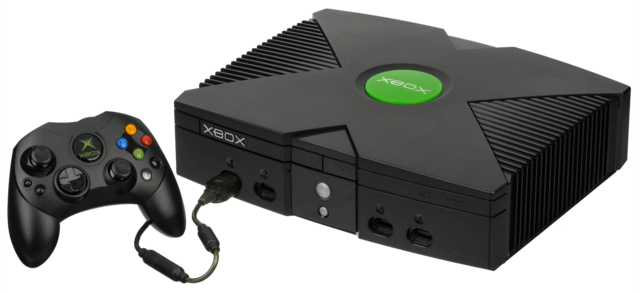
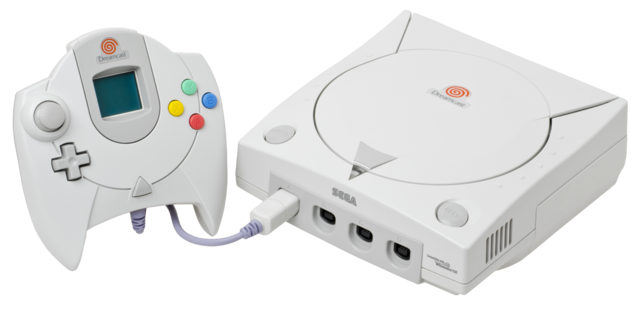
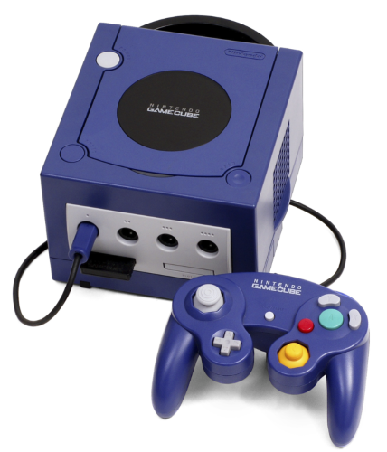
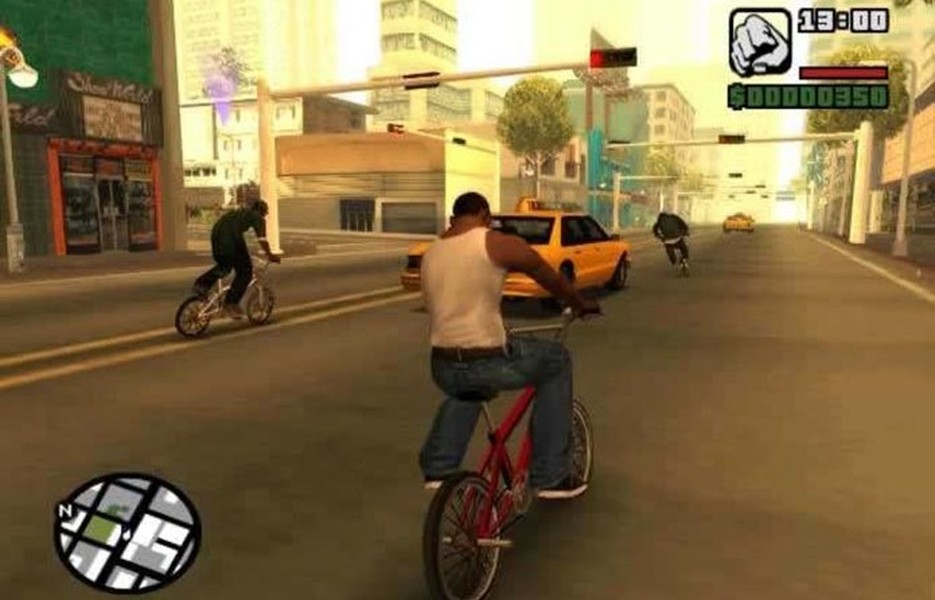
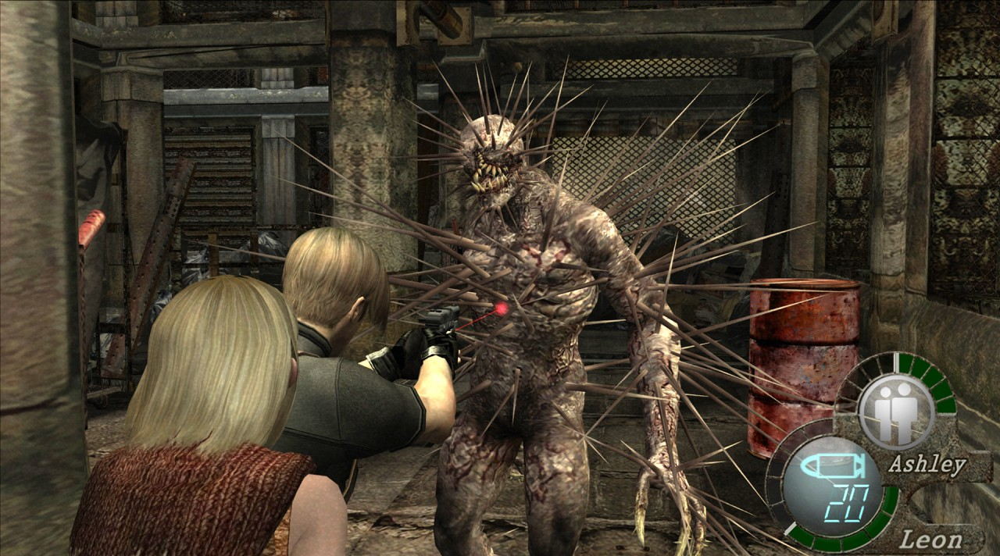
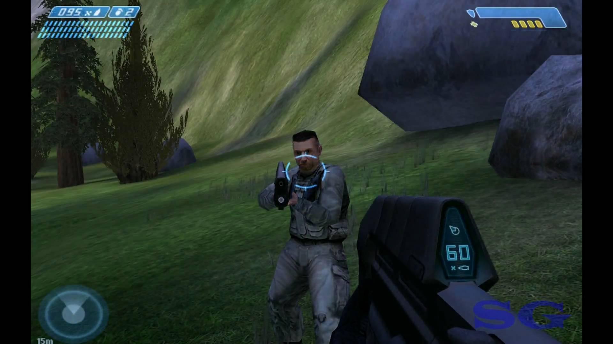

6ª Geração
Pedro Henrique
A sexta geração de consoles e jogos teve início no ano de 1998 com o lançamento do Sega Dreamcast, dando início a geração dos 128 bits. Foi umas das gerações mais lucrativas em vendas de consoles, tendo um total de 23 consoles lançados entre 1998 a 2005. A grande disputa das empresas de consoles começou com a Sega lançando o Dreamcast, logo depois veio a Sony com o Playstation 2, logo depois a Nintendo com o GameCode, e por último a Microsoft lançando o Xbox.
O grande destaque dentre os consoles da sexta geração ficou por conta do Playstation 2, que não só inovou a indústria dos jogos como foi o console mais vendido da geração deixando seus concorrentes pra trás na venda de consoles e na produção de jogos pro mesmo, vendendo quase 158 milhões de consoles.
A Nintendo com o seu GameCube teve uma venda de aproximadamente 21 milhões de consoles (vale ressaltar que a Nintendo lançou 6 consoles só nessa geração, entre consoles de mesa e portáteis).
A Sega com o seu Dreamcast consegui vender um pouco mas que 8 milhões de consoles. Sendo esse o seu último console.
A Microsoft entrou para o mundo dos consoles com seu primeiro console o Xbox, visto também como um concorrente direto a supremacia dos consoles da Sony, criando uma rivalidade que dura até a atual geração que vivemos em 2017. A Microsoft vendeu quase 25 milhões de consoles nessa geração, um número pequeno mais que trouxe grandes preocupação para seus concorrentes, principalmente para a Nintendo que ficou para trás no quesito vendas de consoles.
Playstation 2
O PlayStation 2 foi o segundo console lançado pela Sony, após o PlayStation 1. Foi lançado no dia 4/3/2000 no Japão, no dia 26/10/2000 na América do Norte. Após um primeiro ano não tão bom, o PlayStation 2 cresceu a ponto de tornar-se o console mais vendido da história dos videogames.

Xbox
O Xbox é um console fabricado pela Microsoft. Foi lançado em 15/11/2001 na América do Norte; 22/02/2002 no Japão;representando a primeira investida da empresa no mercado de jogos em consoles. Como parte da sexta geração, o Xbox competiu com o PlayStation 2 da Sony, com o Dreamcast da Sega (que encerrou suas vendas antes do início da comercialização do Xbox) e com o GameCube da Nintendo. Foi o primeiro console da Microsoft desde a retirada do Atari Jaguar em 1996.

Dreamcast
O Dreamcast foi o último console de videogames da Sega.A sega o-lançou com o objetivo de voltar o mercado dos consoles com um sistema de sexta geração,ele foi criado para bater a tecnologicamente o PlayStation da Sony e a Nintendo 64. Era a console mais avançado de sua época e o mais completo de sua geração. Mesmo tendo sido considerado um console que se encontrava "bastante à frente do seu tempo" , ele falhou em ganhar "força" suficiente antes do lançamento do PlayStation 2 em Março de 2000. No entanto, apesar das faltas do console na Europa e na América do Norte, o Dreamcast foi um grande sucesso no Japão.

Nintendo GameCube
O Nintendo GameCube é um console Nintendo, lançado no mercado em novembro de 2001. É o sucessor do Nintendo 64, e seu codinome durante a produção era Project Dolphin. A intenção da Nintendo era tentar retomar o mercado perdido para a Sony e seu PlayStation, que tomou o controle de toda parte dos consoles de sexta geração. Este console trouxe algumas novidades como a interação com o console portátil Game Boy Advance e um controle desenhado para melhor adaptação aos jogadores de todas as idades. Esse console teve vários jogos de sucesso para esta plataforma como: The Legend of Zelda: The Wind Waker, Super Mario Sunshine, Metroid Prime e Resident Evil 4. A Nintendo anunciou o fim da produção do GameCube no início de 2007.

Principais Jogos da Sexta Geração
A sexta geração também ficou marcada pelo lançamento de jogos, com continuações de grandes franquias como a de final fantasy e resident evil, e também com o lançamento de novas franquias com a de kingdow hearts e conquistou a o público logo de cara.
Vale ressaltar que o sucesso dos consoles também é fruto da criação de jogos para o mesmo, vendo que os jogos mais famosos dessa geração estavam disponíveis para o Playstation 2 e alguns tanto para o Playstation quando para o Xbox.
O jogo de mais sucesso da sexta geração sem dúvidas foi o Grand theft auto: san andreas que revolucionou a indústria do jogos, dando mais liberdade aos seus jogadores.
GTA San Andreas

Final Fantasy X

Kingdom Hearts

Resident Evil 4

Halo
